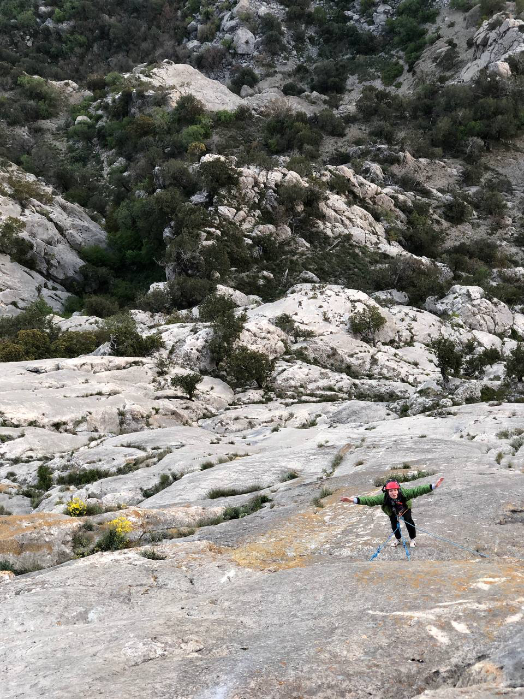
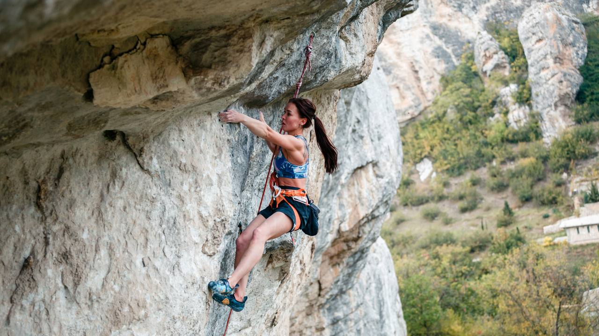

Заметки

Чемпионат Мира 2021 Москва
О Чемпионате Мира, подготовке и ожиданиях. Искренне и просто
За плечами у Динары Фахритдиновой колоссальный опыт – шесть Чемпионатов Мира, однако этот финал в лазании на трудность стал для Динары первым, а также – первым для нашей страны спустя девять лет.
Подробнее

Первые мультипитчи
О мультипитчах, лазании с Димой, принятии себя и предстоящих кубках Мира.
-Динара, привет!
Поздравляю тебя с первым мультипитчем в карьере, с “Одиссеей” 7b+/c.
Расскажи, как так получилось, ты столько лет в скалолазании, а до мультиков добралась только сейчас?
Подробнее

Max Factor 9a
Динара Фахритдинова и первое женское прохождение 9а в России!
Первый раз я попробовала "Max Factor" осенью – в октябре сделала попытки 3. Все по движениям получилось, но мы были в Бахчисарае всего дня 4, поэтому не получилось как-то поработать, но уже тогда я понимала, что я вернусь сюда ради неё однозначно. Это была моя маленькая мечта, попробовать такую категорию. И не секрет, я небольшого роста и некоторые семерки мне могут быть неподвластны, а здесь – трасса моей мечты, все как будто под меня!
Подробнее
Чемпионат в Воронеже
Одним ноготочком
Как проходила подготовка? где тренировалась?
За две недели до старта я решила поехать в Москву, потому что в Тюмени готовиться тяжело, здесь нет такого разнообразия и сложности трасс и так удачно сложилось, в Москве начинались детские сборы, а это значит "много трасс и можно поработать на онсайт" - это я так думала )))) оказалось, что все дети меня облезают и я себя вообще чувствовала мешком, грешила на усталость и мне показалось 2 недели это слишком долго, я эмоционально устала от народа и зала. Вообще не представляю как живя в Москве можно круто выступать, а большинство умудряется еще работать, это просто жесть, мои восхищения!
Подробнее